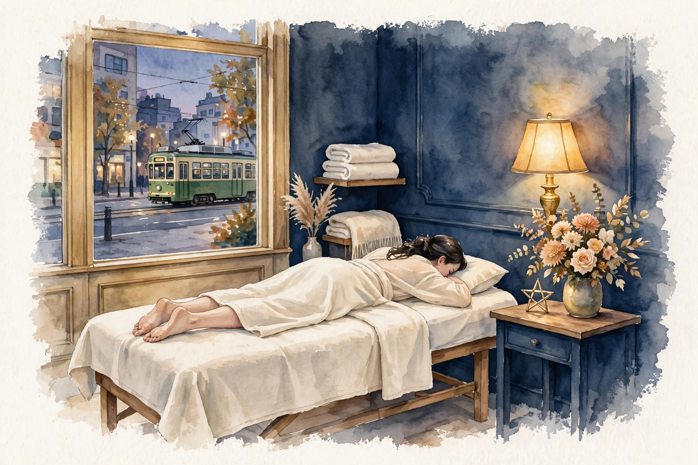
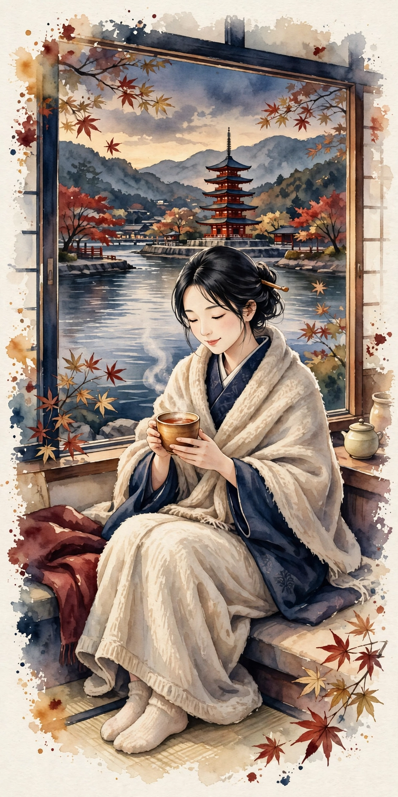
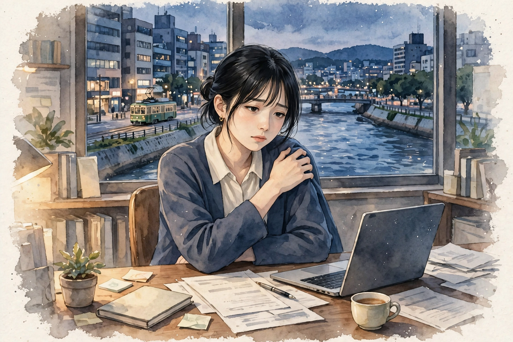
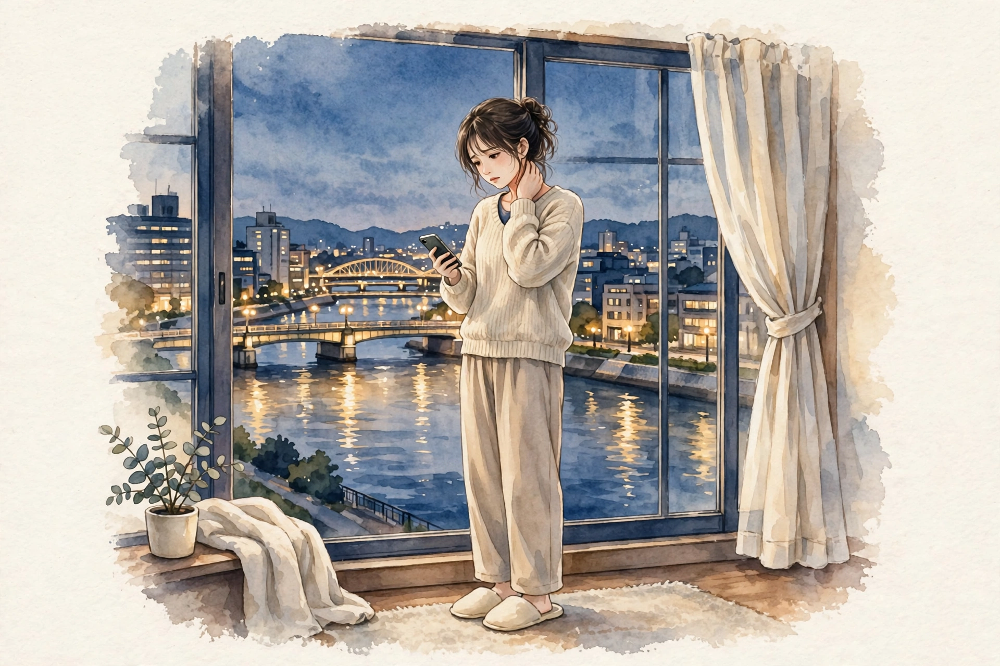

女性専用 ／ オイルマッサージ × 美容整体
川の街の一日の終わりに、
肩と心をほどく場所を、
流川・八丁堀に。
近日開院予定（受付は開始次第、このサイトとLINE公式でお知らせします）
美容整体ステラ・レグルスは、広島・流川／八丁堀エリアで開院準備中の女性専用サロンです。路面電車が行き交う広島の中心部で、仕事帰りの夕方から夜にかけて、オイルマッサージと美容整体で、肩こりや首の重さ、姿勢の崩れといった日々のお悩みに寄り添います。
- 女性専用 女性のお客様のみご利用いただけます
- 90分 10,000円 分かりやすい単一価格です
- 月〜土 17:00〜22:00（予定） お仕事帰りに立ち寄れる時間帯です

こんなお悩みはありませんか
当てはまるものが多いほど、毎日の姿勢や過ごし方に負担が積み重なっているサインかもしれません。まずはチェックしてみてください。
- 夕方になると肩が重く、手で揉みたくなる
- スマートフォンを見る時間が長く、首が前に出ている気がする
- デスクワークで背中が丸まり、姿勢が気になる
- 立ち仕事のあと、脚のむくみやだるさが気になる
- 頭が重く感じて、すっきりしない日が続いている
- 川風で体が冷えやすく、手足の冷たさが気になる
- 眠りが浅く、朝起きても疲れが残っている感じがする
- 顔のむくみや、フェイスラインのもたつきが気になる
お悩みごとの詳しい解説とセルフケアは、でご紹介しています。
施術の様子
レグルスの施術は、オイルマッサージと美容整体を組み合わせた90分です。当日のお体の状態をお聞きしながら、力加減や重点的にほぐす部位を調整します。
01
カウンセリング
その日のお悩みや体調、気になる部位をお聞きします。姿勢の様子も一緒に確認し、施術の進め方をご相談します。
02
オイルマッサージ
オイルを使って背中・肩・脚などを流れるようにほぐします。こわばりやすい肩や首まわりは、様子を見ながら丁寧に圧を調整します。
03
美容整体
骨盤や背骨まわりのバランスに目を向けながら、姿勢が整いやすい状態を目指します。無理に強い力を加える施術は行いません。
※ 当サロンでは鍼灸は行いません。施術は医療行為ではなく、リラクゼーションと美容を目的としたものです。
料金・営業案内
料金はシンプルな単一価格です。コース選びで迷うことなく、当日のお悩みに合わせて内容を組み立てます。
90分 ／ 10,000円（税込）
近日開院予定（受付は開始次第、このサイトとLINE公式でお知らせします）- ・ 料金は90分10,000円の単一価格です
- ・ 担当セラピストは開院時にご案内します
- ・ お問い合わせ用LINE公式アカウントは開設準備中です
| 店名 | 美容整体ステラ・レグルス |
|---|---|
| 場所 | 広島・流川／八丁堀エリアで開院準備中（施設・住所は決まり次第ご案内します） |
| 対象 | 女性専用 |
| 施術内容 | オイルマッサージ、美容整体（鍼灸は行いません） |
| 料金 | 90分 10,000円（単一価格） |
| 営業時間（予定） | 月〜土 17:00〜22:00 ／ 日曜休み（いずれも予定です） |
| 予約受付 | 近日開院予定のため、現在は受付を行っていません。受付は開始次第、このサイトとLINE公式でお知らせします |
| お問い合わせ | お問い合わせ用LINE公式アカウントは開設準備中です |
姉妹店のご案内
ステラシリーズは、星の名前を冠した女性専用サロンです。営業中の姉妹店は各店のサイトでご案内しています。
営業中の姉妹店
開院準備中の姉妹店
- 美容整体ステラ・リゲル（東京）開院準備中
- 美容整体ステラ・カペラ（名古屋）開院準備中
- 美容整体ステラ・アンタレス（福岡）開院準備中
- 美容整体ステラ・デネブ（札幌）開院準備中
- 美容整体ステラ・プロキオン（横浜）開院準備中
- 美容整体ステラ・アルデバラン（仙台）開院準備中
- 美容整体ステラ・レグルス（広島）開院準備中
このサイトです - 美容整体ステラ・ベテルギウス（大宮）開院準備中
開院のお知らせについて
美容整体ステラ・レグルスは近日開院予定です。開院日と受付の開始は、このサイトとLINE公式でお知らせします。お問い合わせ用LINE公式アカウントは開設準備中です。開院まで、でセルフケアの読み物をお届けします。
セラピストとして働くことに興味のある方は、をご覧ください。
お悩み別ページ
気になるお悩みを選ぶと、要因の整理・セルフケア・受診の目安をまとめた解説ページをご覧いただけます。解説は一般的な情報であり、診断や治療を行うものではありません。
肩こり
夕方に重くなる肩、揉んでも戻ってしまう張り。デスクワークや姿勢との関わり、毎日のセルフケアの組み立て方を、流川周辺で働く方の生活に沿って解説します。
首こり
スマートフォンやパソコンで前に出た頭を支える首の負担。首まわりの仕組みと、無理のないほぐし方・整え方を、八丁堀の日常に沿って解説します。
姿勢・猫背が気になる
背中が丸まりやすいのは、胸や肩まわりの使い方と骨盤の傾きが関わります。美容整体では骨盤・背骨まわりのバランスに目を向け、姿勢が整いやすい状態を目指します。詳しい解説ページは準備中です。
脚のむくみ・だるさ
夕方に脚が重く感じるのは、同じ姿勢の長さや冷えと関わることがあります。オイルマッサージで脚全体を流れるようにほぐし、軽やかな感覚を目指します。詳しい解説ページは準備中です。
冷えが気になる
手足の冷たさが気になる方には、施術中に体を温めながら、全身をゆるめる進め方を心がけています。日常では入浴や服装の工夫も大切です。詳しい解説ページは準備中です。
頭の重さ・すっきり感
首や肩の張りが続くと、頭の重さを感じることがあります。首・肩・頭まわりを丁寧にほぐし、すっきりした感覚を目指します。強い頭痛や繰り返す頭痛がある場合は、まず医療機関への相談をおすすめします。詳しい解説ページは準備中です。
よくある質問
開院前にいただくことの多いご質問をまとめました。受付に関する最新情報は、このサイトでお知らせします。
いつ開院しますか
近日開院予定です。具体的な開院日は決まり次第、このサイトとLINE公式でお知らせします。現在は予約の受付を行っていません。
場所はどこですか
広島・流川／八丁堀エリアで開院準備中です。施設と住所は確定次第ご案内します。それまでの間、所在地に関する個別のお問い合わせにはお答えできない場合があります。
女性専用ですか
はい、女性のお客様専用のサロンです。
料金はいくらですか
オイルマッサージと美容整体を組み合わせた90分コースが10,000円の単一価格です。時間や部位によって料金が変わることはありません。
どんな施術ですか。鍼は使いますか
オイルを使ったマッサージと、姿勢のバランスに目を向ける美容整体を組み合わせた施術です。鍼灸は行いません。また、施術は医療行為ではなく、病気の診断や治療を目的としたものではありません。
営業時間を教えてください
月〜土の17:00〜22:00、日曜休みを予定しています。開院時に改めて確定した時間をご案内します。
担当のセラピストは分かりますか
担当セラピストは開院時にご案内します。当サロンは業務委託スタッフ主体の運営のため、個人プロフィールは掲載していません。
予約や問い合わせはどうすればいいですか
受付は開始次第、このサイトとLINE公式でお知らせします。お問い合わせ用LINE公式アカウントは開設準備中です。開設が完了するまで、LINEのボタンやURLは掲載していません。
妊娠中でも施術を受けられますか
体調や時期によって対応が異なります。開院後の受付開始時に、あらためてご案内します。ご不安な場合は、かかりつけ医への確認をおすすめします。
痛い施術ですか
力加減はお声を聞きながら調整します。無理に強い力を加える進め方はしませんので、施術中も遠慮なくお伝えください。
経絡・経穴ガイド
東洋医学で体のエネルギーの通り道とされる「経絡」と、その上にある要所「経穴（ツボ）」の基礎知識です。当サロンの施術では鍼は使いませんが、経穴の位置を目安に、手や指でやさしく圧をかけるアプローチを取り入れています。ここでの説明は伝統的な考え方の紹介であり、特定の症状への効果を保証するものではありません。
経絡とは
経絡は、東洋医学の古典に基づく考え方で、全身を巡る流れの道筋を指します。正経と呼ばれる主要な経絡は12本あり、それぞれ内臓の働きと結びつけて考えられてきました。経穴は経絡上に点在する要所で、古典では360以上が知られています。現代では、経穴の位置は骨や筋肉の目印からの距離で表す方法が広く使われています。
施術でよく触れる経穴
| 肩井（けんせい） | 肩の稜線のほぼ中央、首の付け根と肩先の中間あたりにある経穴。肩まわりの施術で目安にする代表的な点です。強く押しすぎず、呼吸に合わせてやさしく圧をかけます。 |
|---|---|
| 天柱（てんちゅう） | 首の後ろ、髪の生え際の高さで、太い筋肉の外側のくぼみにある経穴。首の後ろ側をほぐす際の目安になります。 |
| 風池（ふうち） | 後頭部の下、耳の後ろの骨と首の筋肉の間のくぼみにある経穴。天柱よりやや外側に位置します。頭を支えるように、指の腹で包むように触れます。 |
| 合谷（ごうこく） | 手の甲側、親指と人差し指の骨が合う部分のやや人差し指寄りのくぼみにある経穴。手軽に触れられるため、セルフケアでも使われることが多い点です。 |
| 曲池（きょくち） | 肘を曲げたときにできるしわの、外側の端にある経穴。腕まわりの施術の目安になります。 |
| 足三里（あしさんり） | 膝のお皿の下、外側のくぼみから指幅4本ほど下にある経穴。脚の施術でよく知られる点の一つです。 |
| 三陰交（さんいんこう） | 内くるぶしの頂点から指幅4本ほど上、すねの骨の後ろ際にある経穴。脚の内側のラインをたどる際の目安です。 |
| 湧泉（ゆうせん） | 足の裏、指を曲げたときにくぼむ部分にある経穴。足裏へのアプローチの目安になります。 |
ご自宅で経穴に触れるときの注意
- 押す力は「気持ちよい」と感じる程度までにとどめ、痛みを我慢して強く押さないでください。
- 1か所につき、ゆっくり呼吸しながら5秒ほど圧をかけ、数回繰り返すくらいが目安です。
- 皮膚に傷や炎症がある場所、体調がすぐれないときは避けてください。
- しびれや強い痛みなど気になる症状がある場合は、セルフケアで様子を見続けず、医療機関に相談してください。
※ 経穴の位置は体の目印からの目安です。個人差があるため、位置の感じ方には幅があります。
セラピスト募集
美容整体ステラ・レグルス（広島・流川／八丁堀エリア）では、開院に向けて業務委託のセラピストを募集しています。夕方から夜の時間帯を中心に、あなたのペースで働ける形を一緒に作っていきましょう。
| 雇用形態 | 業務委託 |
|---|---|
| 報酬 | 施術料の60％ |
| 勤務地 | 広島・流川／八丁堀エリア（施設は開院準備中です） |
| 働く時間 | 月〜土 17:00〜22:00（予定）の範囲で、希望に合わせて設定できます |
| 対象 | 女性セラピストを募集しています（女性専用サロンのため） |
未経験者は研修無料
未経験の方も歓迎します。施術の基礎から学べる研修を無料でご用意していますので、安心してスタートできます。
経験者は技術をそのままメニューに
経験者の方は、お持ちの技術をそのままメニュー化できます。これまで磨いてきた手技を、そのままお客様に届けてください。
時間は希望に合わせて
働く時間は希望に合わせて設定できます。週に数日だけ、夜の数時間だけといった働き方もご相談ください。
Stella Regulus — Beauty Seitai Salon for Women
Stella Regulus is a women-only salon preparing to open in the Nagarekawa / Hatchobori area of central Hiroshima, Japan — a riverside district a short walk from the streetcar lines. We combine oil massage with beauty seitai (a Japanese body-balancing treatment) in a single, simple 90-minute session.
| Salon | Beauty Seitai Stella Regulus — women only |
|---|---|
| Location | Nagarekawa / Hatchobori area, Hiroshima (preparing to open; address to be announced) |
| Treatment | Oil massage and beauty seitai. We do not offer acupuncture. Treatments are for relaxation and beauty care, and are not medical treatment. |
| Price | 90 minutes — ¥10,000 (single flat rate, tax included) |
| Hours (planned) | Monday to Saturday, 5:00 p.m. – 10:00 p.m. Closed on Sundays (planned) |
| Therapists | Our therapists will be introduced when the salon opens. |
| Contact | Our official LINE account for inquiries is being prepared. Please check this page for updates. |
About the treatment
Each session begins with a short consultation about how your body feels that day — stiff shoulders, a heavy neck, tired legs, or posture concerns. The oil massage works over the back, shoulders and legs with pressure adjusted to your comfort, and the beauty seitai part focuses on the balance around the pelvis and spine, aiming for a posture that feels naturally upright. Strong, painful techniques are not used.
Sister salons
Stella Regulus is part of the Stella series of women-only salons, each named after a star. Our sister salons in Umeda (Osaka), Sannomiya (Kobe), Namba (Osaka), Ashiya and Kyoto are already open, and further salons — including Regulus in Hiroshima — are in preparation in Tokyo, Nagoya, Fukuoka, Sapporo, Yokohama, Sendai and Omiya.
ブログ・コラム
お悩み別の解説ページと、季節に合わせたセルフケアのコラムをお届けします。開院に向けて、少しずつ記事を増やしていきます。
-

コラム ／ 季節のセルフケア紅葉が見頃を迎える広島の晩秋は、川沿いの風の冷たさを感じ始める季節でもあります。冷やさない工夫と、無理なく続けられるセルフケアをご紹介します。
-

お悩み別 ／ 肩こり流川・八丁堀周辺で働く方の生活に沿って、肩の張りの要因を整理しました。毎日のセルフケアと、受診を考える目安もまとめています。
-

お悩み別 ／ 首こり前に出た頭を支える首の負担を、姿勢の観点から整理しました。画面との付き合い方や、首まわりのセルフケアをご紹介します。
開院のお知らせや新しい記事は、このページとサイトのトップでご案内します。
サイトマップ
美容整体ステラ・レグルスのサイト内のページ一覧です。
サイト内のページ
記事ページ
姉妹店（外部サイト）
流川で気になる肩こり ── 夜の街で働く体と、肩の張りの付き合い方
広島の中心部、流川から薬研堀、新天地にかけての一帯は、夕方から夜にかけて明かりが増えていく街です。飲食店やバーで働く方、近くの八丁堀・紙屋町で日中デスクワークをする方、路面電車に揺られて通う方。このエリアを行き交う方々からよく聞くのが、「夕方から夜にかけて、肩が重くなる」という声です。「休憩中に自分で揉んでみるけれど、仕事に戻るとすぐ張ってくる」「肩だけでなく首や背中まで固まってくる気がする」。肩こりとは、首から肩、背中にかけての張り・重さ・だるさを総称する言葉で、病名ではありません。だからこそ、まずは自分の肩が「どんなときに、なぜ張るのか」を知ることが、ケアの出発点になります。このページでは、流川・八丁堀エリアの暮らしと仕事の形に引き寄せながら、肩こりの要因を整理し、自宅でできるセルフケアと、医療機関へ相談する目安をまとめました。
肩まわりの仕組み：腕と頭を「吊り下げて」支える場所
肩を覆う僧帽筋は、首の後ろから背中の中央まで広がる大きな筋肉です。約5〜6キログラムある頭を支え、両腕の重さを吊り下げるように受け止める役割があり、立っていても座っていても、起きている間はほぼ休みなく働いています。筋肉は収縮と弛緩を繰り返すことで血の巡りを助けていますが、同じ姿勢で力を入れ続けると、その働きが滞り、老廃物が流れにくくなって、重さや張りとして感じられると考えられています。張る場所にも個性があり、肩のてっぺんが盛り上がるように固い方、肩甲骨の内側が詰まる方、首筋から耳の下まで引っ張られる方などさまざまです。自分の張りやすい場所とタイミングを知っておくことは、セルフケアでも施術でも、どこに重点を置くかを決める手がかりになります。
要因の整理：流川・八丁堀の暮らしと肩の負担
1. 夜の接客・立ち仕事の姿勢
流川エリアには飲食店が多く、接客や調理補助、配膳などで腕を前に出した姿勢が続く仕事が少なくありません。お皿やグラスを運ぶ、カウンター越しに体を乗り出す、といった動きは、肩を内側に巻き込んだまま力を入れ続ける形になりがちです。立ち仕事では脚だけでなく、腕を支える肩まわりにも疲労が静かに積み重なります。忙しい時間帯ほど姿勢を崩しやすいため、張りを感じる方も多い仕事の形です。
2. デスクワークと画面の位置
八丁堀や紙屋町は広島のビジネスの中心で、パソコンに向かう時間の長い方も多いエリアです。モニターが低い、椅子と机の高さが合っていない、ノートパソコンをのぞき込む——こうした環境では、頭が前にずれ、肩の後ろ側が引き伸ばされたまま頭を支えることになります。姿勢を意識で正し続けるのは難しいため、まずは画面と椅子の高さといった「環境」を整えることが、遠回りのようで確かな対策です。
3. 路面電車やバスでの過ごし方
広島の暮らしに欠かせない路面電車。つり革につかまる側の肩だけが上がったままになる、座席でスマートフォンをのぞき込み続ける、といった何気ない通勤の姿勢も、肩への小さな負担になります。混雑する時間帯は体を固めたまま立ち続けることも多く、降りるころには肩がこわばっている、という経験がある方もいるのではないでしょうか。
4. 川沿いの冷えと空調
広島の中心部は京橋川や元安川など川に囲まれ、夜になると川風が通り抜けます。薄着のまま川沿いを歩く帰り道や、店内・オフィスの空調で首元が冷える時間が長いと、肩まわりの筋肉はこわばりやすくなります。日中と夜の気温差が大きい季節の変わり目ほど、「冷えたかどうか」を自覚しにくい点にも注意したいところです。
5. 夜型の生活リズムと睡眠
夜の仕事を終えて明け方に眠る生活では、睡眠の質が下がりやすく、眠っている間も肩の緊張が抜けきらないことがあります。枕の高さが合っていないと、首から肩にかけての負担はさらに増えます。肩の張りは、その日の疲れだけでなく、ここ数日の睡眠と生活リズムを映す鏡でもあります。張りが強い日が続くときは、ケアと同じくらい「眠る環境」を見直す価値があります。
当サロンでのアプローチ
ステラ・レグルスでは、まずその日のお仕事や過ごし方をお聞きし、張りの出方に合わせて進め方を組み立てます。オイルマッサージでは、肩甲骨まわりから背中、首の付け根にかけてを大きな流れでほぐし、肩井や天柱など経穴の位置を目安に、指の腹で圧を調整しながら触れていきます。美容整体では骨盤と背骨まわりのバランスに目を向け、肩だけに負担が集まらない姿勢を目指します。目指すのは、施術後に「肩が軽く、呼吸がしやすい」と感じられる状態です。なお、当サロンの施術は医療行為ではなく、肩こりの原因となる病気の診断や治療を行うものではありません。気になる症状が続く場合は、医療機関での相談とあわせてご利用ください。
ご自宅でできるセルフケア
合間の「肩すくめ」と肩回し
両肩を耳へ近づけるようにぐっとすくめて3秒、そして一気に力を抜きます。5回繰り返したら、肘で円を描くように肩を前・後ろへ各5回。接客の合間や電車を待つ間にもできる、小さなリセットです。ポイントは力を抜く瞬間をしっかり作ること。緊張と弛緩の落差が、こわばりをほどくきっかけになります。
胸の前を開くストレッチ
内側に巻き込んだ肩は、揉むだけでなく「開く」ことも大切です。壁や柱に片手をつき、体を反対側へゆっくりひねると、胸の前側が心地よく伸びます。左右15〜20秒ずつ。配膳やパソコン作業で縮こまった胸側を伸ばすことで、肩が元の位置に戻りやすくなります。
帰宅後の湯船で温める
夜の仕事のあとほど、シャワーで済ませず湯船に肩まで浸かる時間を作ってみてください。時間がない日は、蒸しタオルを首の付け根に当てるだけでも構いません。川風で冷えた帰り道の日は特に、温めてから眠ることで、翌朝の肩の軽さが変わってきます。
持ち物と通勤姿勢の見直し
いつも同じ側にバッグをかけている方は、肩への負担が偏りやすくなります。左右を持ち替える、リュックにする、荷物自体を減らす——どれも小さな工夫です。路面電車では、つり革を持つ手をときどき替えるだけでも、片側の肩の上がりっぱなしを防げます。
枕の高さを確かめる
朝起きた直後から肩が張っている日が続くなら、枕が合っていないサインかもしれません。仰向けで首のカーブが自然に支えられ、呼吸がしやすい高さが目安です。タオルを重ねて高さを少しずつ変え、数日単位で試してみると、自分に合う感覚がつかめてきます。
忙しい日々の中で、続けるために
セルフケアは「時間が取れたらやる」ものにすると、忙しい日ほど後回しになります。おすすめは、既にある行動にくっつけることです。お店の開店準備の前に肩回し、帰宅して着替えたらストレッチ、湯船に浸かりながら首をゆっくり回す。1回1分でも、毎日積み重なれば、肩まわりの巡りを保つ助けになります。また、張りの強さは週の半ばと週末、繁忙期とそうでない時期でも変わります。自分の「張りやすい曜日のパターン」を知っておくと、忙しくなる前に休息やケアの予定を置くなど、先回りの工夫ができるようになります。自分の手の届く範囲のケアと、届かない背中側のケアは別物です。背中や肩甲骨の内側は、サロンの施術に任せる部分として切り分けておくと、無理なく長く付き合っていけます。
受診の目安
肩の張りの背景は一つではなく、姿勢・仕事の形・冷え・睡眠が絡み合っていることがほとんどです。一度に全部を変えようとせず、できるところから一つずつ。ご自身の手が届かない背中や肩甲骨まわりのケアは、私たちにお任せください。ステラ・レグルスは広島・流川／八丁堀エリアで開院準備中です。近日開院予定（受付は開始次第、このサイトとLINE公式でお知らせします）。お問い合わせ用LINE公式アカウントは開設準備中です。
八丁堀で気になる首こり ── 画面と暮らす街で、首をいたわるために
八丁堀は、デパートやオフィスビルが集まり、路面電車の電停に人が行き交う、広島の中心です。仕事の合間の買い物、電車を待つ数分のスマートフォン、帰りの電車でのうつむいた姿勢——。「首が重くて、頭を支えるだけで疲れる」「左右を向くときに首の付け根が詰まる感じがする」「肩までつながって張ってくる」。首こりの相談は、肩こりと並んで多いお悩みです。首は細い構造で重い頭を支える、体の中でも負担を受け止め続ける場所です。しかも現代の暮らしは、画面を見る時間が延びるほど、頭が前に出た姿勢で過ごす時間が増えていきます。このページでは、八丁堀周辺で働き、暮らす方の日常に沿って、首に負担が集まる仕組みと要因を整理し、セルフケアと受診の目安をまとめました。
首の仕組み：カーブが支える頭の重さ
首は頸椎（けいつい）と呼ばれる7つの小さな骨の積み重なりでできています。本来は緩やかに前方へカーブすることで、約5〜6キログラムの頭の重さをうまく分散しています。ところが、画面をのぞき込むように頭が前に傾くと、てこの働きで首の後ろ側の筋肉にかかる負担は跳ね上がります。後ろ側が引っ張られ続ける一方で、前側や横側の筋肉は縮んだまま使われにくくなり、バランスが崩れていきます。首と肩は筋肉でつながっているため、首の張りは肩へ、肩の張りは首へと伝わり合います。だからこそ首のケアは、首だけを揉むのではなく、頭の位置と姿勢全体から考えることが大切になります。
要因の整理：首に負担が集まる5つの背景
1. スマートフォンの見方
電停で電車を待つ間、電車の中、帰宅後のソファ。手元の画面をのぞき込む姿勢は、気づかないうちに一日の合計で何時間にもなります。画面を目線の高さへ近づける、操作の合間に顔を上げて遠くを見る、といった小さな切り替えだけでも、首の後ろ側が休める時間は作れます。
2. オフィスの作業環境
八丁堀・紙屋町周辺のオフィスで働く方に多いのが、モニターの位置が低く、顔が前に突き出たまま固定される姿勢です。椅子の高さ、モニターとの距離、書類の置き場所といった環境の要素は、首の角度を毎日決めています。姿勢を頑張って直そうとするより、ノートパソコンの下に台を置く、モニターを目線の高さに上げるなど、環境側を先に整える方が無理がありません。
3. 買い物袋とバッグの持ち方
八丁堀や本通りで買い物をした帰り、重い袋を片方の肩や腕にかけ続けると、首から肩にかけての筋肉は持ち上げた側だけ緊張し続けます。荷物は両手に分ける、リュックを使う、といった分散の工夫は、首の左右のバランスを保つうえで思いのほか効果的です。
4. 枕と眠り方
朝、目覚めたときから首が固い——そんな日が続くなら、枕の高さが首のカーブに合っていないのかもしれません。高すぎればあごが引けた姿勢で、低すぎれば頭が落ちて首が反った姿勢で眠ることになります。タオルで高さを微調整しながら、数日かけて「朝の首が軽い」高さを探す方法があります。
5. 緊張と浅い呼吸
商談や接客、締め切りの前など、緊張する場面では無意識に肩が上がり、呼吸が浅くなります。首の横や前側の筋肉は呼吸を助ける働きも担うため、浅い呼吸が続く日は首まわりの力も抜けにくくなります。作業の切れ目に一度、ゆっくり長く息を吐くことは、首と肩の緊張をほどく合図として取り入れやすい習慣です。
当サロンでのアプローチ
ステラ・レグルスでは、首そのものに強い力をかけることはしません。まず土台となる肩・背中・肩甲骨まわりをオイルマッサージでほぐし、巡りを整えたうえで、首まわりには天柱や風池といった経穴の位置を目安に、指の腹で包むようなやさしい圧で触れていきます。首を鳴らすような操作は行いません。美容整体では骨盤や背中のバランスに目を向け、頭が自然な位置に収まりやすい状態を目指します。目的は、その場の軽さだけでなく、日常に戻ったあとに「頭の位置」を自分で気づける感覚を持ち帰っていただくことです。なお、当サロンの施術は医療行為ではなく、首の不調の原因となる病気の診断や治療を行うものではありません。症状が強い場合や長く続く場合は、医療機関での相談とあわせてご利用ください。
ご自宅でできるセルフケア
あご引きの小さな運動
正面を向き、あご先に指を軽く当てて、あごを水平に後ろへ引くように小さく動かします。5秒保って戻す、を5回。頭の位置を本来の場所へ戻す感覚を体に覚えさせる運動で、デスクでも電車を待つ間でもできます。痛みやしびれが出る場合は中止してください。
首の横をゆっくり伸ばす
椅子に座り、頭の側面に片手を添えて、耳を肩へ近づけるように首を横へ倒します。反対の肩が浮かないようにし、心地よい伸びのところで15〜20秒。左右どちらも行い、決して勢いをつけないことが大切です。温めたあとに行うと、伸ばしやすくなります。
画面から首を休ませる習慣
30分に一度を目安に、画面から目を離して顔を上げ、遠くの景色を見る時間を作りましょう。広島の中心部なら、窓の外の川面や橋、山並みがちょうどよい「遠く」になってくれます。目と首は連動して疲れるため、両方を同時に休ませられる習慣です。
首元を冷やさない工夫
入浴では首まで湯に浸かり、帰り道の川風が強い日は、ストールやマフラーで首元を覆います。蒸しタオルを首の後ろに当てるのも手軽です。冷えてこわばった筋肉は伸びにくいため、温める→伸ばす、の順番を意識すると、無理のないケアになります。
首の前側への意識
うつむく姿勢では、後ろ側だけでなく前側・横側の筋肉も縮こまります。耳の後ろから鎖骨へ向かうラインを、指の腹でなでるようにやさしく触れてみてください。力を入れて揉む必要はありません。のどの正面を強く押すことは避け、表面を温めるくらいの気持ちで十分です。その後にあご引きの運動を組み合わせると、前後のバランスを取り戻す感覚が持ちやすくなります。
肩甲骨を動かして、首の土台をほぐす
首を支える筋肉の多くは、肩甲骨や鎖骨とつながっています。首そのものを動かす前に、両手を肩に置いて、肘で大きな円を描くように前回し・後ろ回しを各5回行ってみてください。肩甲骨の動きが滑らかになると、頭の重さを首だけで受け止める形から、背中全体で支える形へ近づきます。とくに後ろ回しは、前に巻き込みがちな肩を開く動きにもなります。首に痛みがある日は、首の運動は休み、この肩甲骨回しだけにしても構いません。土台からほぐす意識が、首への負担を分散させる助けになります。
張りやすい「自分のパターン」を知る
首が張るきっかけは、画面の長さだけとは限りません。重い荷物を持った日、眠りの浅かった翌日、寒い川風に当たった夜。数日分を振り返ってメモしておくと、自分のパターンが見えてきます。パターンが分かれば、忙しい日の前夜に早めに休む、カバンを軽くするなど、小さな先回りができるようになります。首こりは、暮らし全体のリズムを教えてくれるサインでもあります。首だけをほぐしても姿勢が戻ればまた張る、という繰り返しから抜けるには、頭の位置・画面環境・睡眠という三つの柱を、少しずつ整えていくことが近道です。
受診の目安
首のケアは、首だけを見ることから一歩進んで、頭の位置と暮らし方全体を見直すことが大切です。できることから一つずつ取り組み、自分の手では整えにくい肩や背中の土台づくりは、サロンの施術にお任せください。ステラ・レグルスは広島・流川／八丁堀エリアで開院準備中です。近日開院予定（受付は開始次第、このサイトとLINE公式でお知らせします）。お問い合わせ用LINE公式アカウントは開設準備中です。
紅葉の宮島と、川風の冷たさ ── 広島の晩秋をいたわる過ごし方
11月の広島は、街の色が静かに変わっていく季節です。宮島の紅葉谷ではモミジが見頃を迎え、平和大通りや川沿いの並木も、緑から黄、赤へと装いを変えていきます。休日に紅葉を眺めに出かけた日、夕方になって橋の上を渡る風の冷たさに、思わず肩をすくめた——そんな経験はありませんか。日中は穏やかでも、川の多い広島の街では、陽が傾くと川風が体感温度をぐっと下げます。晩秋は、美しい景色と引き換えに、「冷え」と「こわばり」を感じやすい季節でもあります。今回は、この街の晩秋ならではの体の変化と、暮らしの中で無理なく続けられる工夫をご紹介します。
なぜ晩秋は、肩や首が張りやすいのか
気温が下がると、体は熱を逃がさないよう血管を縮め、筋肉もこわばりやすくなります。寒さに肩をすくめるのは、体を守るための自然な反応です。ただ、その「すくめた姿勢」が長く続くと、肩や首の筋肉は力を入れっぱなしになり、張りとして残ります。さらにこの時期は、日照時間が短くなって外出や歩行の機会が減りがちです。歩くことは、全身の巡りを助ける最も身近な運動です。冷え、こわばり、運動量の低下。この三つが重なる晩秋は、一年の中でも肩や首の不調を訴える方が増える季節なのです。
川風の街では「首元を守る」が合言葉
広島の中心部は川に囲まれ、橋を渡るたびに風の通り道を通ります。体を効率よく温めたいときは、首・手首・足首の「首」のつく場所を覆うことが昔ながらの知恵です。とくに首元には太い血管が通っており、ここを冷やさない工夫は全身の温かさにつながります。紅葉狩りや夕方の買い物のときは、マフラーやストールを一枚。電車やお店の空調で冷えた日は、帰宅後に蒸しタオルで首の後ろを温めるだけでも、こわばりがゆるむ感覚を得やすくなります。「川を渡る前に首元を守る」——この街に暮らす小さな合言葉として、覚えておいてください。
歩く楽しみがある季節だからこそ
晩秋の広島は、歩くのに気持ちのよい季節でもあります。川沿いの遊歩道を歩けば、水面に映る夕日や、水鳥の姿に出会えます。平和大通りでは、やがてイルミネーションの準備が始まり、街の明かりが増えていく時期です。歩くときは、少し大股で、腕を軽く振って。肩甲骨が自然に動く歩き方は、肩まわりの巡りを助けてくれます。宮島へ紅葉を見に行く日も、境内をゆっくり歩く時間そのものが、体にとってはよい運動です。帰りのフェリーで冷えた体は、その日のうちに湯船で温めてあげましょう。
乾燥と、内側からの潤い
冷えと並んで晩秋に気になるのが乾燥です。空気が乾くと、肌のうるおいが逃げやすくなり、喉も乾きやすくなります。水分補給は、冷たいものより常温や温かいものを選ぶと、冷え対策と両立できます。白湯や温かいお茶を少しずつ飲む習慣は、体を内側から温める助けにもなります。入浴後の保湿は、肌が温かいうちに。オイルマッサージの心地よさは、肌のコンディションとも関わります。乾燥する季節こそ、自分の肌をいたわる時間を少しだけ丁寧に取りたいものです。
一日の終わりに、ため込まない工夫
こわばりは、一日の終わりにまとめて解消しようとするより、途中で小分けにほどく方が楽に続けられます。両肩をすくめてストンと落とす動き、背伸びと深呼吸、湯船の中で足首を回すこと。どれも道具のいらない小さな動きです。そして夜は、温まった体のまま布団に入ることを意識してみてください。就寝前に入浴を済ませ、布団を湯たんぽなどで温めておくと、冷えで寝つけにくい夜の助けになります。季節に合わせて暮らしのリズムを少し調整することは、やがて来る本格的な冬への、静かな準備でもあります。
紅葉の美しさと、川風の冷たさ。広島の晩秋は、その両方を楽しみながら体をいたわる季節です。「冷やさない」「歩く」「ため込まない」。この三つを、できる範囲で続けてみてください。それでも肩や首の張りが抜けない日は、プロの手に委ねる時間も選択肢の一つです。美容整体ステラ・レグルスは、広島・流川／八丁堀エリアで開院準備中の女性専用サロンです。オイルマッサージと美容整体で、冷えた体のこわばりを丁寧にほぐすお手伝いができるよう、準備を進めています。近日開院予定（受付は開始次第、このサイトとLINE公式でお知らせします）。お問い合わせ用LINE公式アカウントは開設準備中です。開院まで、このコラムで季節のセルフケアをお届けしていきます。